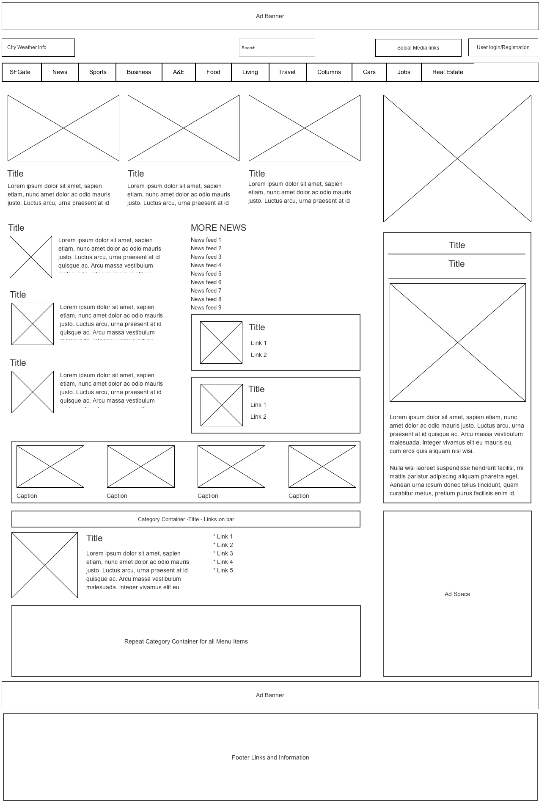
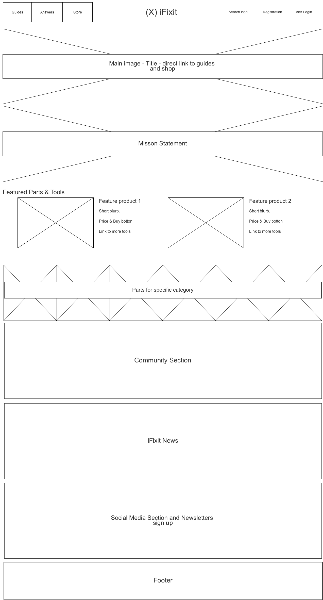
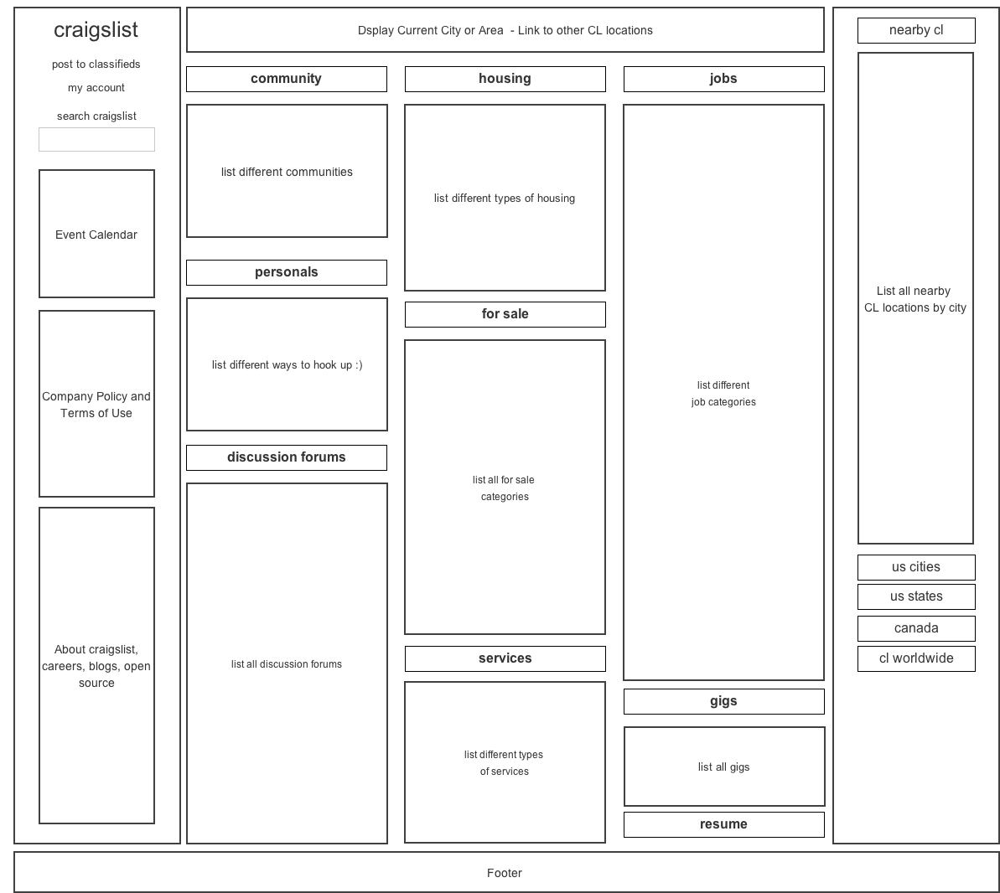

The problem this web page is trying to solve is how can it deliver a large amount of news content in an organized and simple fashion. The visual challenge is displaying stories from most important to least important for different categories without overwhelming the user.
The problem this web page is trying to solve is how provide users with tools to repair all their electronic devices. It provides videos, instructional guides, community support, and tools to buy to make the repair job simple. The visual challenge is to let the user easily see where they can find the instructional guide, where they can shop for tools to aid them in their repair, and where they can post questions or search for help within the community.
The problem this web page is trying to solve is how to provide users with a quick way of posting classified ads to sell products and services, search for jobs, look for housing, find a date, community updates, and events. The visual challenge is to be able to quickly sort out each section so people can find the category they want to look at to search and post.
